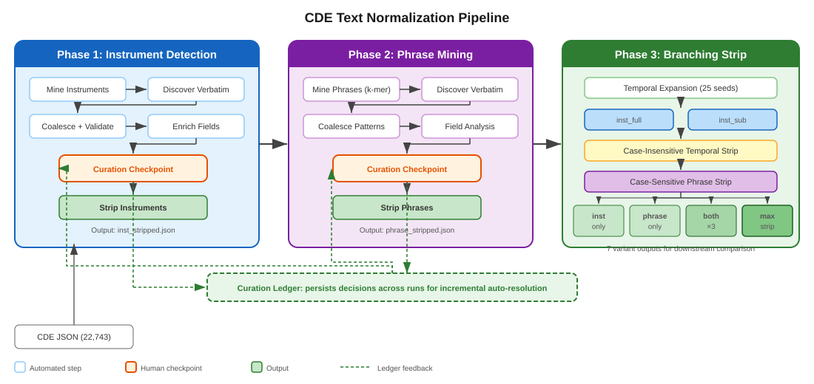
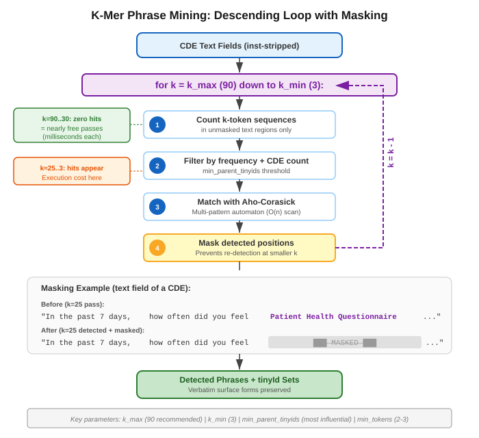
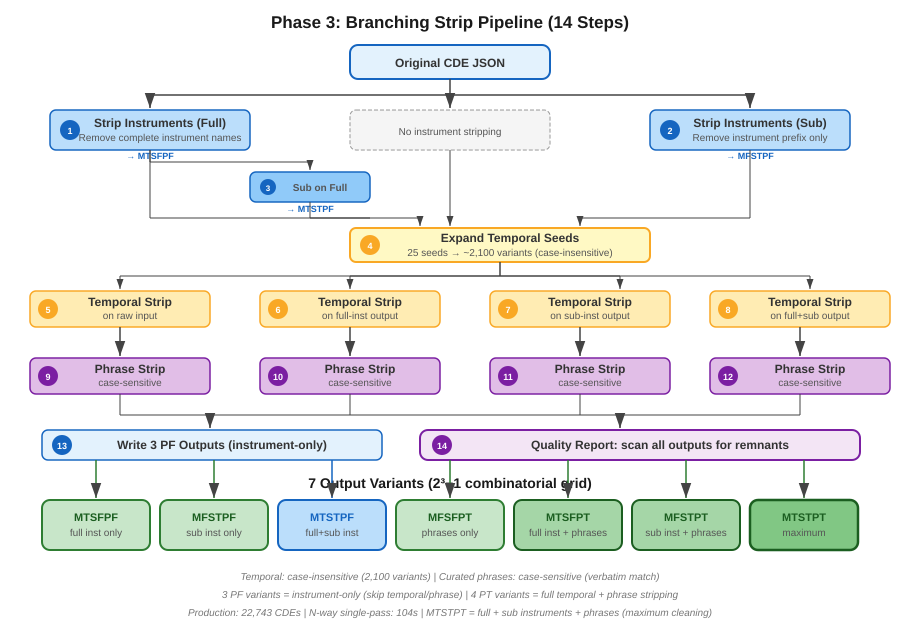
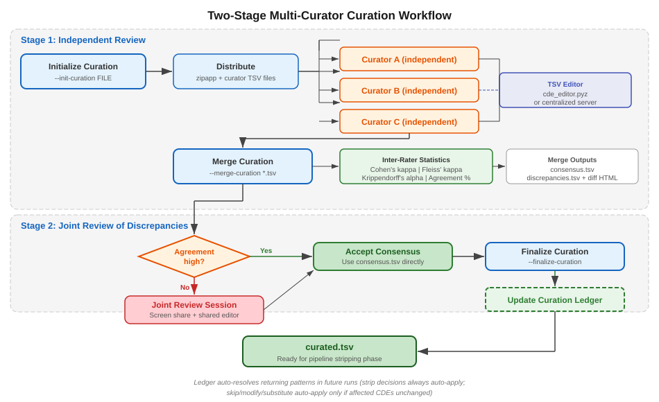

Automated detection and removal of repeated text patterns
from NLM Common Data Elements
Gerard Tromp — CDE Analyzer v1.0.0 — March 2026
Updated: 2026-03-13 (cosine similarity analysis appended)
Goal: Normalize CDE text fields so that transformer embeddings capture clinical meaning, not shared boilerplate.
Problem: Raw CDE text contains repeated instrument names, temporal preambles, and instructional phrases that distort embedding space.
Impact:
Approach: Three-phase pipeline
Scale: 22,743 CDEs processed
553K characters removed (max variant)
Example CDE definition (before):
“This is a definition for Patient-Reported Outcomes Measurement Information System (PROMIS) Anxiety Short Form 8a item. In the past 7 days, I felt fearful.”
The instrument name spans 78 characters in a 130-character definition.
25 seed patterns → ~2,100 expanded variants
| Variant | Removed |
|---|---|
| Instruments only (full) | -515K |
| Phrases only | -105K |
| Both (full + phrases) | -553K |
Solution: Automated mining + human curation + multi-variant stripping

Blue = automated steps | Orange = human checkpoints | Green dashed = ledger feedback
| Run | Patterns | Auto-resolved | Need review | Effort reduction |
|---|---|---|---|---|
| Run 1 (first time) | 1,480 | 0 | 1,480 | — |
| Run 2 (expanded) | 1,550 | ~900 | ~650 | 57% |
| Run 3 (further) | 1,480 | ~1,200 | ~280 | 81% |
| Parameter | Value |
|---|---|
| min_prefix_tinyids | 2 |
| min_count (harvest) | max(N*0.0005, 5) |
| workers | 0 (auto) |
1,342 raw → 591 coalesced → 458 validated
Iterative harvesting catches residual patterns across rounds
| Parameter | Impact | Recommended |
|---|---|---|
| min_parent_tinyids | HIGHEST | max(2, N/1000) |
| min_field_count | HIGH | 4–6 |
| k_max | MODERATE | 90 |
| min_tokens | LOW-MOD | 2–3 |
| k_min | NEGLIGIBLE | 3 |

Seeds:
Expansion:
| Pass | Patterns | Case |
|---|---|---|
| First | Temporal (2,100) | Insensitive |
| Second | Curated phrases | Sensitive |
Prevents false matches from case-insensitive phrase stripping
0 temporal remnants in definition/designation fields

7 variants (2³−1) over {full inst, sub inst, phrases} — field-aware splits make all combinations distinct
| Code | Main inst | Sub inst | Phrases | Description |
|---|---|---|---|---|
| MTSFPF | Stripped | — | — | Full instrument only |
| MFSTPF | — | Stripped | — | Sub-group only |
| MTSTPF | Stripped | Stripped | — | Full + sub instruments |
| MFSFPT | — | — | Stripped | Phrases only |
| MTSFPT | Stripped | — | Stripped | Full instruments + phrases |
| MFSTPT | — | Stripped | Stripped | Sub instruments + phrases |
| MTSTPT | Stripped | Stripped | Stripped | Maximum stripping |
Field-aware splits: inst_full and inst_sub operate on different text spans, making all 7 combinations genuinely distinct.
Same corpus (22,743 CDEs), different parameter settings
| Parameter | allcde01 (strict) | allcde03 (midway) | allcde02 (lax) |
|---|---|---|---|
| min_parent_tinyids | 20 | 5 | 5 |
| min_field_count | 6 | 4 | 3 |
| min_tokens | 3 | 2 | 2 |
| k_max | 25 | 90 | 90 |
| Coalesced patterns | 138 | 2,132 | 2,132 |
| After field analysis | 86 | 1,480 | 1,599 |
| Zipf high-priority | — | 582 | — |
| Zipf low-priority (trivial) | — | 898 | — |
Impact ranking: min_parent_tinyids (18.6x) > min_field_count (~25%) > k_max > min_tokens > k_min
| Setting | Curator queue | False positives | False negatives |
|---|---|---|---|
| Strict (allcde01) | ~86 | Very few | Many missed |
| Lax + Zipf (allcde03) | 582 high + 898 low | Controlled | Very few |
| Lax (allcde02) | ~1,599 | Many | Very few |
Use permissive settings + Zipf split:
skipmin_parent_tinyids ≈ max(2, N/1000)
| CDEs | Suggested |
|---|---|
| 1,000 | 2 |
| 5,000 | 5 |
| 10,000 | 10 |
| 20,000 | 10–20 |

--init-curation enriched.tsv
--curators "alice,bob,carol"Creates per-curator TSV files
python cde_editor.pyz file.tsv--merge-curation curation/*.tsv -o results/| Metric | Threshold |
|---|---|
| Cohen's κ (pairwise) | > 0.80 excellent |
| Krippendorff's α | > 0.80 reliable |
| 0.67–0.80 tentative | |
| < 0.67 unreliable |
Browser-based TSV editor as Python zipapp
--split-auto-skip pre-fills skip for low-priority
| ☐ | # | decision | modification | pattern | tinyIds | notes |
|---|---|---|---|---|---|---|
| (all) ↓ | Filter... | Filter... | Filter... | Filter... | ||
| ☐ | 1 | strip | SF-12 Health Survey | aB3k | xP7m… | ||
| ☑ | 2 | skip | I felt | cD9n | hJ2q… | ||
| ☐ | 3 | modify | in past 7 d… | I got enough sle… | fK4p | mN8r… | G1 G1 |
| ☐ | 4 | modify | in past 7 d… | I had difficulty… | gL5s | nO9t… | G1 G1 |
| ☐ | 5 | substitute | difficulty you… | Considering yo… | aR2v | wQ6x… | G2 G2 |
| ☐ | 6 | Gas Exchange | jM7u |
Decision badges: strip / skip / modify / substitute
Left border: def-only / desig-only / both
Right border + badge: merge group (G1, G2…)
Row 2 selected (blue highlight) | Row 6 undecided (blank) | Toolbar: decision buttons, group ops, undo/redo
Merge and Split are not used for curation but useful for pattern file management
--merge-patterns file1.tsv file2.tsv -o merged.tsv--split-priority needs_review.tsv --split-auto-skip--coalesce-variants: subsumption + prefix trie--field-analysis: add field counts--validate-subsumption: empirical check--expand-temporal-seeds: seed → variants--harvest-to-supplementary: ingest residuals| Version | Feature |
|---|---|
| v0.6.0 | Multi-curator, scaffold, vignettes |
| v0.7.0 | Standalone editor, curation server |
| v0.8.0 | Incremental curation ledger |
| v0.8.1 | Substitute decision type |
| v0.9.0 | Zipf priority split |
| v0.9.2 | N-way single-pass engine |
| v0.9.5 | Containment tree in editor |
| v0.9.6 | 5-way branching strip + allcde03 run |
min_parent_tinyids is the most influential parameter (18.6x)Automate detection, curate decisions, persist knowledge, strip with variants.
Question: How much semantic content does each stripping variant remove?
Method: Cosine similarity between embeddings of the same CDE under different stripping configurations.
Scale: C(8,2) = 28 pairs × 10 models × 22,743 tinyIds = 6,368,040 comparisons
Embeddings: cde08 v2, 1024-dim, concatenated designation + definition text
Global mean: 0.9736 | Range: [0.032, 1.000]
| MFSFPF | MFSFPT | MFSTPF | MFSTPT | MTSFPF | MTSFPT | MTSTPF | MTSTPT | |
|---|---|---|---|---|---|---|---|---|
| MFSFPF | 1.000 | .971 | .984 | .968 | .961 | .949 | .959 | .947 |
| MFSFPT | .971 | 1.000 | .981 | .997 | .967 | .977 | .965 | .975 |
| MFSTPF | .984 | .981 | 1.000 | .984 | .972 | .959 | .973 | .960 |
| MFSTPT | .968 | .997 | .984 | 1.000 | .964 | .974 | .965 | .975 |
| MTSFPF | .961 | .967 | .972 | .964 | 1.000 | .987 | .998 | .984 |
| MTSFPT | .949 | .977 | .959 | .974 | .987 | 1.000 | .985 | .997 |
| MTSTPF | .959 | .965 | .973 | .965 | .998 | .985 | 1.000 | .987 |
| MTSTPT | .947 | .975 | .960 | .975 | .984 | .997 | .987 | 1.000 |
Cluster A (MF*: no inst_full strip)
| Cluster B (MT*: inst_full stripped)
Within-cluster ≥ 0.96 | Between-cluster: 0.95–0.97
| Axis | Toggle | Mean Cosine | Impact |
|---|---|---|---|
| Instrument Full (M) | MF↔MT | 0.960 | Highest |
| Phrases (P) | PF↔PT | 0.971 | Moderate |
| Instrument Sub (S) | SF↔ST | 0.998 | Minimal |
| Model | Mean | Sensitivity |
|---|---|---|
| medbert | 0.950 | Most sensitive |
| minilm | 0.952 | High |
| mpnet | 0.953 | High |
| clinbert2 | 0.999 | Near-invariant |
General-purpose models detect more change than domain-specialized ones.
Implication for downstream clustering: Stripping preserves semantic content while removing the shared-instrument similarity signal that drives false clustering.
6,368,040 comparisons: 10 models × 28 pairs × 22,743 CDEs (allcde03, cde08 v2 embeddings, 2026-03-13)